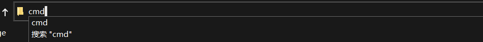

前言：
Burp Suite 是用于攻击web 应用程序的集成平台，包含了许多工具。Burp Suite为这些工具设计了许多接口，以加快攻击应用程序的过程。所有工具都共享一个请求，并能处理对应的HTTP 消息、持久性、认证、代理、日志、警报。
注：安装前要先查系统是否有JAVA环境，没有就要先安装JAVA环境。
安装步骤
查询是否有JAVA环境
1 | java -version |
要是没有的话就去配置JAVA环境，目前并没有写JAVA环境教程，先看看其他人的
burp下载
注：这是我一直用的，带中文，挺好用的
1 | 百度网盘： |
把它放到自己喜爱的地方然后打开命令提示符“cmd”，将cmd定位到burp文件夹中。例如我

通过cmd打开“burp-loader-keygen-2_1_05-Jaky.jar”
1 | java -jar burp-loader-keygen-2_1_05-Jaky.jar |

在”Loader Command”中随意输入，例如”text”,点击”run”,然后他就跳转到”burpsuite_pro_v2.1.05.jar”,选择”I Accept”

将”burp-loader-keygen-2_1_05-Jaky.jar”中的”License”复制到文本框中，并点击”next”

点击”Manual activation”
将”2.Copy the following … in your browser”中的密钥，复制到”Activation Request”中，”Activation Response”自动弹出密钥，复制到”3.Paste below … in your browser”中，点击”next”

至此安装基本完成,点击”finish”


退出后，点击”burp启动.bat”,一般情况下可以直接启动，并进行汉化。个别需要重新激活，这按上面的步骤重新激活
至此安装并汉化完成